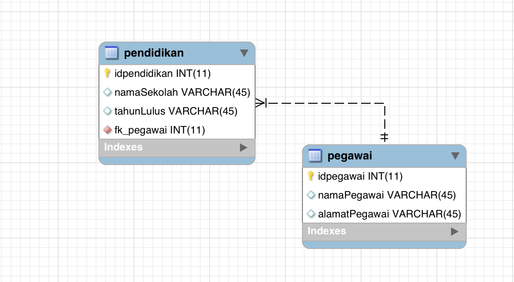

Pengenalan Model View Controller (Bagian 2)
Pengertian Model
Model merepresentasikan struktur data dari applikasi yang dibuat, biasanya model berisi fungsi untuk mengambil, menyimpan dan merubah informasi pada database.
Pada sebuah framework yang menggunakan design pattern MVC, maka kode program dipisahkan menjadi tiga bagian besar yaitu Model, View dan Controller. Pemisahan bagian kode program ini bertujuan agar proses pengembangan software menjadi lebih mudah dan teratur.
Pemisahan kode program menjadi 3 bagian M(model), V(view), dan C(controller) ini wajib diikuti oleh pengembang software, walaupun secara teknis bisa saja mencampur kode program dalam satu file yang sama.
MVC banyak digunakan di berbagai macam framework, khususnya pada framework Code Igniter. Untuk menambah pengetahuan mengenai design pattern MVC silahkan merujuk pada link berikut ini :
Model Pada Codeigniter
Untuk membuat model pada framework codeigniter dapat dilakukan dengan aturan sebagai berikut :
Semua file model di codeigniter secara default disimpan di folder models:
codeigniter ├── application │ ├── controllers │ ├── models │ ├── views ├── assets │ ├── css │ ├── fonts │ └── jsSemua file models dalam codeigniter merupakan sebuah class yang diturunkan dari class CI_Model
class Blog_model extends CI_Model{ }Best practice nya pada file file yang ada di folder models pada codeigniter digunakan khusus untuk berurusan dengan data yang dibutuhkan oleh aplikasi, baik data ini berupa data yang berada di database, maupun file.
Cara Membuat Model
Pada contoh kali ini kita akan membuat sebuah model pada codeigniter yang akan memberikan data dari tabel biodata di database mysql.
Buat file baru dengan nama Biodata.php pada folder models (Perhatikan dengan seksama nama file (huruf capital), dan lokasi penyimpanan file di folder models)
codeigniter ├── application │ ├── controllers │ ├── models | | └── Biodata.php │ ├── views ├── assets │ ├── css │ ├── fonts │ └── jsIsilah di dalam class Biodata.php kode program yang membuat class Biodata mengekstend CI_Models, perhatikan ada function
__construct()yang merupakan bawan default untuk konstruktor pada file Model di Codeigniter.
class Biodata extends CI_Model {
function __construct() {
parent::__construct()
}
}
- Setelah itu class dapat di isi dengan method method yang dibutuhkan untuk mengakses database.
Cara Load Model
Untuk dapat digunakan sebuah model pada codeigniter harus di load terlebih dahulu oleh controller yang menggunakan model tersebut, perhatikan bahwa untuk mengikuti konsep MVC yang benar yang dapat mengakses model secara langsung hanyalah sebuah controller, view tidak boleh menginstansiasi model.
Cara melakukan load model pada sebuah controller dapat dilakukan dengan perintah berikut :
$this->load->model('nama_model')$this->load->model('folder/nama_file')
Kode program pertama adalah untuk me load file model yang langsung ada di folder model, sedangkan kode program kedua untuk model yang ada di dalam folder lain pada folder models.
Autoload Model
Autoload model adalah cara untuk me load model secara otomatis tanpa harus me-load-nya secara manual di masing masing controller, dengan cara ini model yang dimasukkan ke autoload akan selalu ada untuk semua controller yang ada di codeigniter. Walaupun dengan cara ini model dapat diakses oleh semua controller, namun sebaiknya jangan terlalu banyak menaruh model di autoload.
Untuk mengkonfigurasi autoload, dapat dilakukan dengan membuka file konfigurasi
autoload, file configurasi ini ada di folder application/config/autoload.php
/*
| -------------------------------------------------------------------
| Auto-load Models
| -------------------------------------------------------------------
| Prototype:
|
| $autoload['model'] = array('first_model', 'second_model');
|
| You can also supply an alternative model name to be assigned
| in the controller:
|
| $autoload['model'] = array('first_model' => 'first');
*/
$autoload['model'] = array('nama_model','model_lain','model_baru');
Koneksi Ke Database
Untuk dapat terhubung ke database diperlukan sebuah file konfigurasi, file
konfigurasi ini ada di folder application\config\database selain itu juga
perlu mengaktifkan autoload untuk library database pada file
application\config\autoload
Contoh konfigurasi autoload :
/*
| -------------------------------------------------------------------
| Auto-load Libraries
| -------------------------------------------------------------------
| These are the classes located in system/libraries/ or your
| application/libraries/ directory, with the addition of the
| 'database' library, which is somewhat of a special case.
|
| Prototype:
|
| $autoload['libraries'] = array('database', 'email', 'session');
|
| You can also supply an alternative library name to be assigned
| in the controller:
|
| $autoload['libraries'] = array('user_agent' => 'ua');
*/
$autoload['libraries'] = array('database');
Contoh konfigurasi database
$active_group = 'default';
$query_builder = TRUE;
$db['default'] = array(
'dsn' => '',
'hostname' => 'localhost',
'username' => 'root',
'password' => '',
'database' => 'codeigniter',
'dbdriver' => 'mysqli',
'dbprefix' => '',
'pconnect' => FALSE,
'db_debug' => (ENVIRONMENT !== 'production'),
'cache_on' => FALSE,
'cachedir' => '',
'char_set' => 'utf8',
'dbcollat' => 'utf8_general_ci',
'swap_pre' => '',
'encrypt' => FALSE,
'compress' => FALSE,
'stricton' => FALSE,
'failover' => array(),
'save_queries' => TRUE
);
Dengan konfigurasi di atas kita terhubung ke database mysql local, dengan username root tanpa password dan database yang digunakan adalah mysql.
Jobsheet Praktikum Koneksi Model Ke Database
- Buatlah sebuah database di database mysql anda berikan nama database
codeigniter
create database codeigniter;
- Buatlah sebuah tabel
biodatadidalam databasecodeigniterdengan empat kolom yaituid(primary key, int 11),nama(varchar(50)),nim(varchar(50)),alamat(varchar(50))
create table biodata(
id int(11) UNSIGNED AUTO_INCREMENT PRIMARY KEY,
nama varchar(50),
nim varchar(50),
alamat varchar(50)
);
- Edit file
application\config\database.php - Edit file
application\config\autoload.php
Cara Query Ke Database Pada Codeigniter
Terdapat dua cara untuk melakukan query pada codeigniter antara lain :
- Melakukan query dengan sintaks mysql biasa pada model
- Melakukan query dengan Active Record
query dapat dilakukan setelah melakukan load library database pada file
application\config\autoload.phpdan mengkonfigurasi database pada fileapplication\config\database.php
Contoh query pada model dengan query mysql pada model
//contoh query dengan return object
public function getBiodataObject(){
$query = $this->db->query("Select nama,nim,alamat from biodata");
foreach($query->result() as $row){
echo $row->nama;
echo $row->nim;
echo $row->alamat;
}
echo 'Total results : ' + $query->num_rows();
}
//contoh query dengan return array
public function getBiodataArray(){
$query = $this->db->query("Select nama,nim,alamat from biodata");
foreach($query->result_array() as $row){
echo $row['nama'];
echo $row['nim'];
echo $row['alamat'];
}
echo 'Total results : ' + $query->num_rows();
}
Contoh query pada model dengan active record
//contoh active record dengan return object
public function getBiodataActiveRecordObject(){
$this->db->select("nama,nim,alamat");
$query = $this->db->get("biodata")
foreach($query->result() as $row){
echo $row->nama;
echo $row->nim;
echo $row->alamat;
}
echo 'Total results : ' + $query->num_rows();
}
//contoh query dengen return object
public function getBiodataActiveRecordArray(){
$this->db->select("nama,nim,alamat");
$query = $this->db->get("biodata")
foreach($query->result_array() as $row){
echo $row['nama'];
echo $row['nim'];
echo $row['alamat'];
}
echo 'Total results : ' + $query->num_rows();
}
Informasi lebih lengkap mengenai active record dapat anda baca di link berikut ini Dokumentasi Active Record
Kedua cara untuk mengquery di atas baik dengan query manual maupun menggunakan active record sama sama baiknya dan silahkan digunakan sesuai dengan kebutuhan anda ketika membuat program
Jobsheet Praktikum Pengenalan Model Query Model Dengan Query Biasa
- Isilah data pada database tabel biodata yang sebelumnya dibuat.
- Buat lah sebuah controller dengan nama Home pada file Home.php
<?php
defined('BASEPATH') or exit("No Direct Script Allowed");
class Home extends CI_Controller{
public function index(){
$this->load->view('home')
}
}
- Buatlah Sebuah Model pada folder
models\biodata.php
<?php
defined('BASEPATH') or exit("No Direct Script Allowed");
class Biodata extends CI_Models {
public function __construct() {
parent::__construct();
}
public function getBiodataQueryArray() {
// silahkan di isi sendiri
}
public function getBiodataQueryObject() {
// silahkan di isi sendiri
}
}
- Update Controller Home untuk memanggil model Biodata
5) Buatlah sebuah file view home.php untuk menampilkan data dari database
Jobsheet Praktikum Pengenalan Model Query Model dengan Query Builder
- Update model biodata Model pada folder
models\biodata.phpdengan menambahkan dua method baru untuk mengambil data dari database dengan menggunakan active record.
<?php
defined('BASEPATH') or exit("No Direct Script Allowed");
class Biodata extends CI_Models {
public function __construct() {
parent::__construct();
}
}
public function getBiodataQueryArray() {
// silahkan di isi sendiri
}
public function getBiodataQueryObject() {
// silahkan di isi sendiri
}
public function getBiodataActiveRecordArray() {
// silahkan di isi sendiri
}
public function getBiodataActiveRecordObject() {
// silahkan di isi sendiri
}
}
Update Controller Home untuk memanggil model Biodata
Update tampilan view untuk menampilkan data
Take Home Task
Buatlah sebuah project codeigniter baru, kemudian setting koneksi databasenya dan buatlah aplikasi web yang dapat menampilkan data dari database dengan desain database sebagai berikut :

File dump untuk mysql ada di url berikut ini : Url Sql Dump
Buatlah sebuah halaman pada aplikasi codeigniter yang sebelumnya dibuat, halaman ini harus dapat diakses melalui url :
/pegawai/[index]
dimana pegawai adalah controller dan /[index] adalah input melalui url yang akan mengatur data yang ditampilkan pada halaman /pegawai input pada [index] merupakan angka (id) pada database pegawai.
Pada halaman /pegawai/[index] tampilkanlah data pegawai dengan format sebagai berikut :
- Nama Pegawai
- Alamat Pegawai
- Jumlah Pendidikan yang ditempuh oleh pegawai sesuai data yang ada pada tabel pendidikan
- Daftar pendidikan yang ditempuh oleh pegawai di urutkan dari yang paling akhir dalam bentuk tabel dan diberi nomor urut.